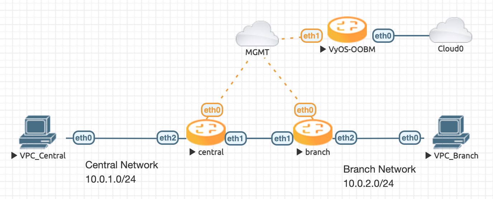

Wireguard
This simple structure show how to connect two offices. One remote branch and the central office.
Topology
The topology have a central and a branch VyOS router and one client, to test, in each site.
Configuration
Set the local subnet on eth2 and the public ip address eth1 on each site.
Central
set interface ethernet eth2 address 10.0.1.254/24
set interface ethernet eth1 address 198.51.100.1/24
Branch
set interface ethernet eth2 address 10.0.2.254/24
set interface ethernet eth1 address 198.51.100.2/24
Next thing to do, is to create a wireguard keypair on each side. After this, the public key can be displayed, to save for later.
vyos@central:~$ generate pki wireguard
Private key: cMNGHtb5dW92ORG3HS8JJlvQF8pmVGt2Ydny8hTBLnY=
Public key: WyfLCTXi31gL+YbYOwoAHCl2RgS+y56cYHEK6pQsTQ8=
After you have each public key. The wireguard interfaces can be setup.
Central
set interfaces wireguard wg01 private-key 'cMNGHtb5dW92ORG3HS8JJlvQF8pmVGt2Ydny8hTBLnY='
set interfaces wireguard wg01 address 192.168.0.1/24
set interfaces wireguard wg01 description 'VPN-to-Branch'
set interfaces wireguard wg01 peer branch allowed-ips 10.0.2.0/24
set interfaces wireguard wg01 peer branch allowed-ips 192.168.0.0/24
set interfaces wireguard wg01 peer branch address 198.51.100.2
set interfaces wireguard wg01 peer branch port 51820
set interfaces wireguard wg01 peer branch public-key '9ySVcjER2cY1tG/L7598zHg8g1xyggjxALqzeCxLgw4='
set interfaces wireguard wg01 port 51820
Branch
set interfaces wireguard wg01 private-key 'oDZ2S/4S6UEuhOyk0MvNSQTebugihX5RKCrI3exmHV8='
set interfaces wireguard wg01 address 192.168.0.2/24
set interfaces wireguard wg01 description 'VPN-to-central'
set interfaces wireguard wg01 peer central allowed-ips 10.0.1.0/24
set interfaces wireguard wg01 peer central allowed-ips 192.168.0.0/24
set interfaces wireguard wg01 peer central address 198.51.100.1
set interfaces wireguard wg01 peer central port 51820
set interfaces wireguard wg01 peer central public-key 'WyfLCTXi31gL+YbYOwoAHCl2RgS+y56cYHEK6pQsTQ8='
set interfaces wireguard wg01 port 51820
To reach the network, a route must be set on each VyOS host. In this structure, a static interface route will fit the requirements.
Central
set protocols static route 10.0.2.0/24 interface wg01
Branch
set protocols static route 10.0.1.0/24 interface wg01
Testing and debugging
After all is done and commit, let’s take a look if the Wireguard interface is up and running.
vyos@central:~$ show interfaces wireguard
Codes: S - State, L - Link, u - Up, D - Down, A - Admin Down
Interface IP Address S/L Description
--------- ---------- --- -----------
wg01 192.168.0.1/24 u/u VPN-to-Branch
And ping the Branch PC from your central router to check the response.
vyos@central:~$ ping 10.0.2.100 count 4
PING 10.0.2.100 (10.0.2.100) 56(84) bytes of data.
64 bytes from 10.0.2.100: icmp_seq=1 ttl=63 time=0.641 ms
64 bytes from 10.0.2.100: icmp_seq=2 ttl=63 time=0.836 ms
64 bytes from 10.0.2.100: icmp_seq=3 ttl=63 time=0.792 ms
64 bytes from 10.0.2.100: icmp_seq=4 ttl=63 time=1.09 ms
--- 10.0.2.100 ping statistics ---
4 packets transmitted, 4 received, 0% packet loss, time 3013ms
rtt min/avg/max/mdev = 0.641/0.838/1.086/0.160 ms